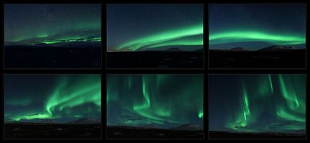

characteristics
forms
According to Clark (2007), there are four main forms that can be seen from the ground, from least to most visible:
Brekke (1994) also described some auroras as curtains.The similarity to curtains is often enhanced by folds within the arcs. Arcs can fragment or break up into separate, at times rapidly changing, often rayed features that may fill the whole sky. These are also known as discrete auroras, which are at times bright enough to read a newspaper by at night.
These forms are consistent with auroras’ being shaped by Earth’s magnetic field. The appearances of arcs, rays, curtains, and coronas are determined by the shapes of the luminous parts of the atmosphere and a viewer’s position.
colors and wavelengths of auroral light
changes with time
Auroras change with time. Over the night, they begin with glows and progress towards coronas, although they may not reach them. They tend to fade in the opposite order.
At shorter time scales, auroras can change their appearances and intensity, sometimes so slowly as to be difficult to notice, and at other times rapidly down to the sub-second scale. The phenomenon of pulsating auroras is an example of intensity variations over short timescales, typically with periods of 2–20 seconds. This type of aurora is generally accompanied by decreasing peak emission heights of about 8 km for blue and green emissions and above average solar wind speeds (~ 500 km/s).
aurora noise
Aurora noise, similar to a hissing, or crackling noise, begins about 70 m (230 ft) above the Earth’s surface and is caused by charged particles in an inversion layer of the atmosphere formed during a cold night. The charged particles discharge when particles from the Sun hit the inversion layer, creating the noise.